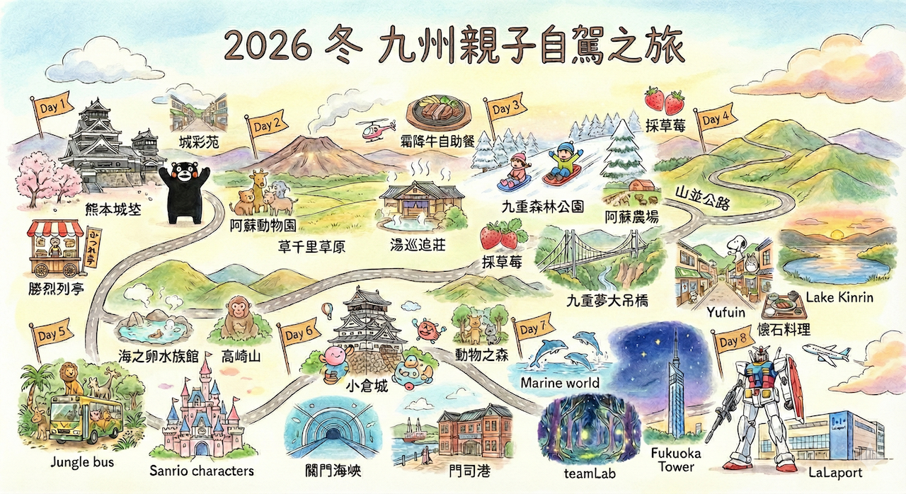
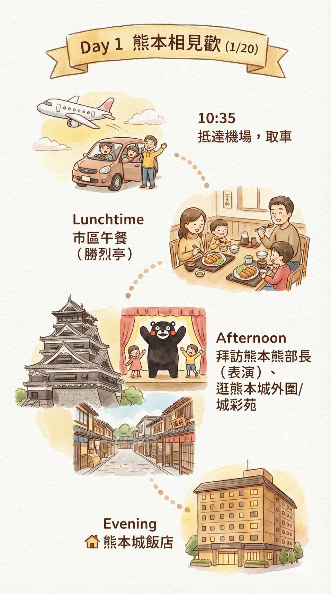
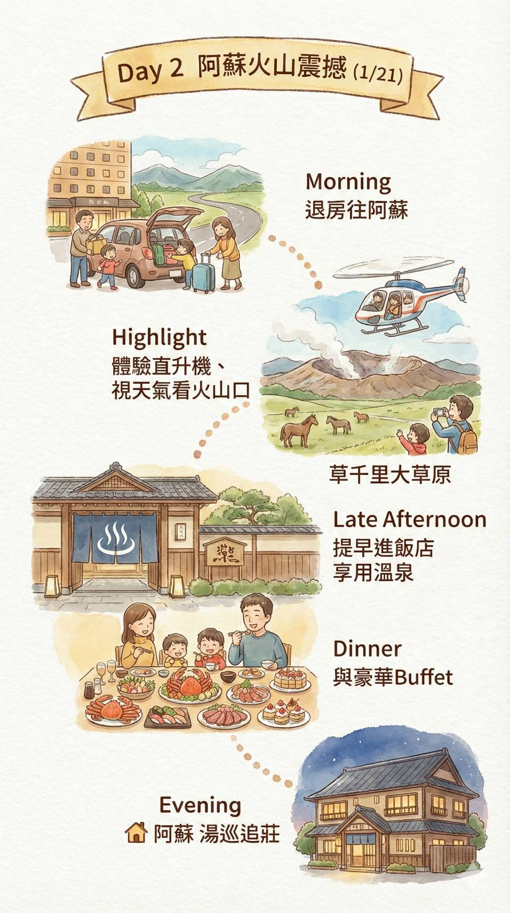
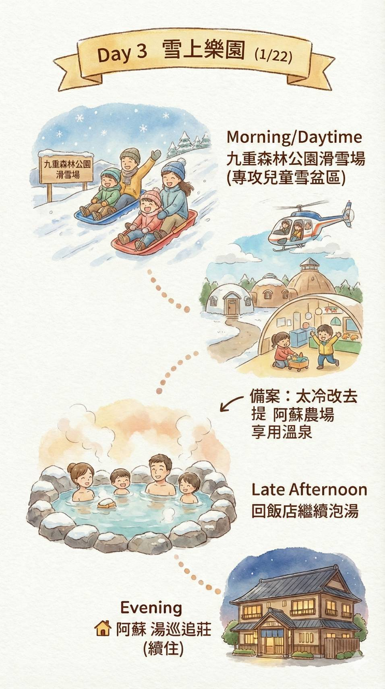
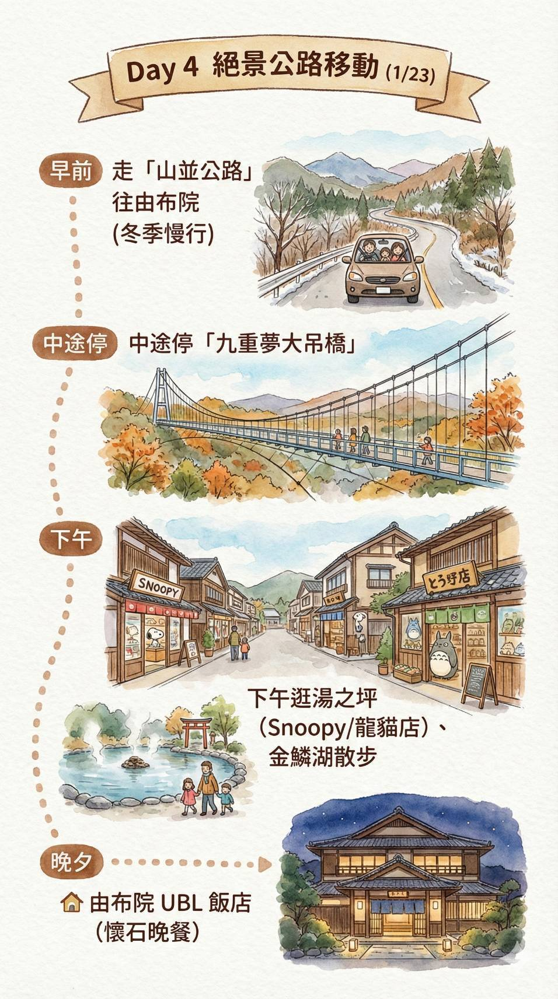
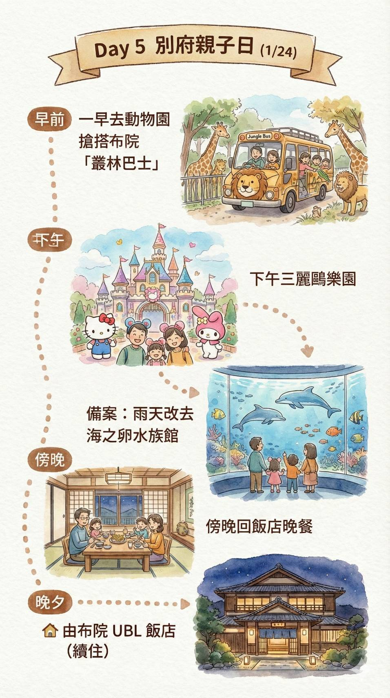
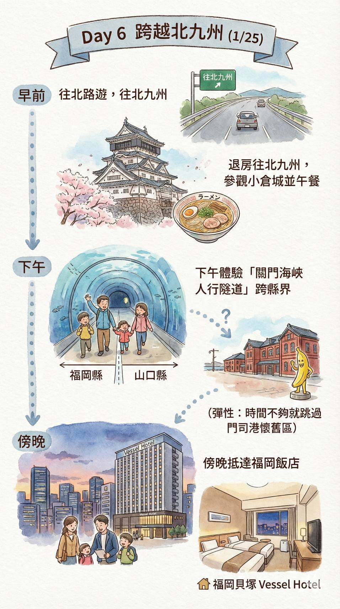
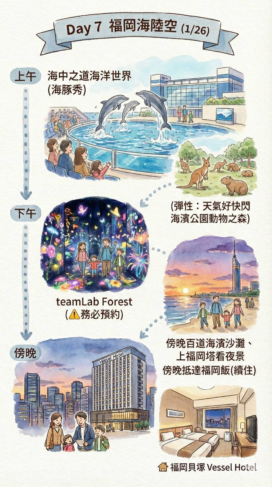
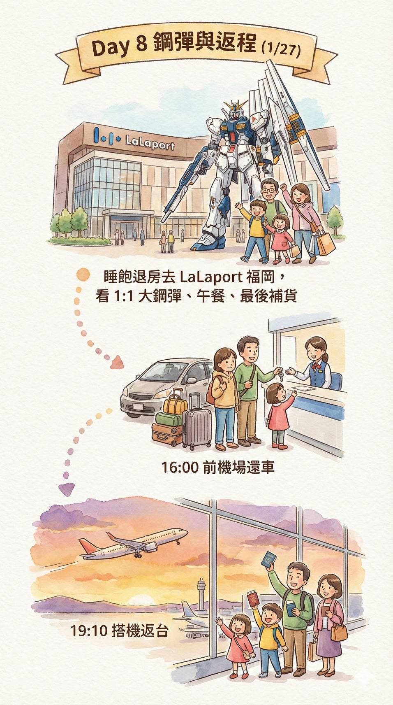

🇹🇼🇯🇵 2026 冬 九州親子自駕8日 Ver. 60 (修正：Day 1 導航資訊更新)
🗓️ 行程資訊
✈️ 星宇航空 Starlux (去程)
JX846
20
JAN
2026
TPE
✈️To
KMJ
Depart
07:30
Arrive
10:35
✈️ 星宇航空 Starlux (回程)
JX841
27
JAN
2026
FUK
✈️To
TPE
Depart
19:10
Arrive
20:50








🚨 行前最重要！關鍵檢查表
- 💰 財務確認：請準備 ¥150,000 現金 (含租車費/ETC/餐費)。
- 🚗 租車關鍵：務必確認已指定【雪胎 (Snow Tires)】。機場付款約 ¥114,000。
- ⚠️ Day 5 戰術：早上禁止繞去車站咖啡廳！9:30前務必抵達動物園。
- 🎫 提前預約：Day 7 teamLab、Day 5 動物園叢林巴士(現場排隊)。
- 📦 打包提醒：布丁、果醬類屬液體，回程請務必放託運。
🗺️ Day 1 (1/20 二)
初見九州・光之森戰略採購
- 10:35 抵達熊本機場 (JX846)。
- 11:30 機場取車：備妥 ¥114,000 現金付款。導航設定：藏壽司 (096-348-0610)。
-
12:15 🍣 午餐：無添藏壽司 (熊本光之森店)。
攻略：停店門口平面車位。預算約 ¥4,000，便宜吃飽還能玩扭蛋！ -
13:30 🛍️ 採購：Youme Town 光之森 (ゆめタウン)。
戰術：開車2分鐘即達。2F Uniqlo / 3F GU 買救命內刷毛寬褲。
補給：1F 超市買草莓大瓶水、2F 阿卡將買小孩零食。 - 15:00 飯店：帶著戰利品前往市區 Check-in 休息。
黃金休息時間：進房洗水果吃，3 歲妹妹睡午覺，爸媽看窗外熊本城。 - 17:00 景點：散步去 SAKURA MACHI (櫻町熊本)。
目標：頂樓花園找巨大熊本熊機器人拍照 (免排隊)。 - 18:30 晚餐：勝烈亭豬排 (新市街本店)。
必點：厚切黑豚豬排，爸爸喝生啤酒。 - 20:00：散步回飯店，看點燈的熊本城入睡。
- 🏠 住宿：熊本城飯店 (Kumamoto Hotel Castle)
🗺️ Day 2 (1/21 三)
熊本城攻頂 & 阿蘇豪華大餐
- 09:00 景點：櫻之馬場 城彩苑 & 熊本城天守閣。
安排：搭接駁車或走路上去，剛整修好非常壯觀。 - 11:00 點心：回到城彩苑吃 海膽可樂餅、紅豆番薯糰子。
- 12:00 午餐：(彈性安排) 前往阿蘇路上。
建議：買便當去下個景點野餐，或路邊看到想吃的就停。 - 13:30 體驗：阿蘇 Cuddly Dominion (卡德利動物樂園)。
重頭戲：天氣好就搭直升機看火山口！(現金準備好)。 - 16:00 景點：草千里 & 中岳火山口 (冬季雪白草原)。
- 18:00：抵達飯店 Check-in，享受溫泉與免費設施。
-
19:00 晚餐：🦀 豪華 Buffet 戰場。
菜單：國產霜降牛燒肉 + 長腳蟹腳 + 生啤酒/燒酒喝到飽。 - 🏠 住宿：阿蘇 湯巡追莊 (房內泡半露天溫泉)
🗺️ Day 3 (1/22 四)
銀白世界・滑雪初體驗
- 09:30 早餐：吃飽一點，滑雪很耗體力。
- 10:30 玩雪：九重森林公園滑雪場。
裝備：拿出自備防水褲/手套。租借雪盆 (Sled) 在兒童區玩就超好玩！ - 13:00 午餐：滑雪場食堂 (熱咖哩飯/拉麵)。
- 16:00：早點回飯店休息 (不用收行李！)。
活動：飯店大廳有像夜市一樣的射擊、撈球遊戲 (緣日)，小孩超愛。 - 18:30 晚餐：Buffet 第二回合 (補吃昨天沒吃到的！)。
- 🏠 住宿：阿蘇 湯巡追莊 (續住)
- ☔ 暴風雪備案：改去「阿蘇農場 (Aso Farm Land)」玩室內設施。
🗺️ Day 4 (1/23 五)
絕景公路移動日 (阿蘇 ➔ 由布院)
- 10:00：準時退房，行駛 **山並公路** (冬季慢行)。
- 🚽 廁所：必停「瀨之本高原休息站」或「長者原遊客中心」。
- 11:00 景點：九重夢大吊橋 (風大注意保暖)。
- 12:00 午餐：吊橋遊客中心吃漢堡。
- 14:30：抵達由布院 Check-in，車停飯店。
- 下午茶：Cafe La Ruche (金鱗湖畔) 或 Carandonel。
- 散策：湯之坪 (Snoopy 茶屋/金賞可樂餅) ➔ 金鱗湖黃昏。
- 18:30 晚餐：飯店內懷石料理。
- 🏠 住宿：由布院 UBL 飯店
- 🎁 必買特產：柚子胡椒、B-Speak 蛋糕捲、Milch 甜甜圈、GOEMON 蛋糕卷。
- ☔ 雨雪備案：由布院彩繪玻璃美術館、Comico Art Museum。
🗺️ Day 5 (1/24 六)
別府親子雙重奏 (戰術調整版)
- 08:00：飯店早餐。
- 09:00：務必準時出發！中途超商買咖啡，不繞去車站。
- 09:30 景點：**九州自然動物園** (搭叢林巴士餵獅子)。
- 12:50 午餐戰術：Hotto Motto 日出店買便當 或 路邊炸雞。
- 13:10：抵達和諧樂園停車場，在車上吃完午餐再入園。
- 13:40 景點：**三麗鷗和諧樂園** (全家搭摩天輪)。
- 16:45：撤退 (避開閉園車潮)。
- 18:00：返回由布院飯店晚餐。
- 🏠 住宿：由布院 UBL 飯店 (續住)
- ☔ 雨雪備案：大分海洋宮殿水族館「海之卵」(室內為主)、別府竹細工傳統產業會館。
🗺️ Day 6 (1/25 日)
跨越北九州 (避開塞車策略)
- 07:30：早鳥散策 (金鱗湖晨霧)。
- 10:00：退房，開車前往北九州 (中停別府灣 SA)。
- 11:30 景點：**小倉城** (參觀互動天守閣)。
- 12:30 午餐：小倉城旁 Riverwalk 商場。
- 14:30 體驗：**關門海峽人行隧道** (走路跨縣界)。
- 16:00：離開北九州，開往福津。
- 17:00 戰略停留：★AEON MALL 福津。
目的：避開進福岡市區塞車潮，吃飽逛完再回飯店。 - 備案晚餐：一蘭拉麵 (新宮店)。
- 19:40：抵達飯店 Check-in。
- 🏠 住宿：福岡貝塚 Vessel Hotel
- 🎁 必買特產：螺絲巧克力 (小倉城)、門司港燒咖哩包。
- ☔ 雨雪備案：九州鐵道紀念館 (門司港/室內)、北九州市立自然史博物館 (恐龍)。
🗺️ Day 7 (1/26 一)
海陸空制霸 + 百道濱
- 09:30 景點：**海中之道海洋世界** (看海豚秀)。
- 14:30：移動至百道濱 (停 MARK IS 停車場)。
- 下午茶：RHC CAFE (Markis 2F)。
- 15:30 體驗：**teamLab Forest Fukuoka** (⚠️務必預約)。
- 17:30 景點：百道海濱公園 (沙灘散步)。
- 18:30 景點：**福岡塔** (上塔看夜景)。
- 🏠 住宿：福岡貝塚 Vessel Hotel (續住)
- 🎁 必買特產：一蘭/一風堂禮盒 (超市買)、福岡甜王草莓 (Amaou) 限定零食。
- ☔ 雨雪備案：福岡市科學館 (六本松/室內互動多)、Mark Is 福岡。
🗺️ Day 8 (1/27 二)
鋼彈 ➔ 機場大採購
- 10:30：睡飽退房，前往 **LaLaport 福岡**。
- 攻略：1:1 Nu 鋼彈、4F 鋼彈基地、2F UNIQLO 童裝。
- 休息：倉式珈琲店。
- 14:30：離開商場，提早前往機場。
- 15:00 還車：直接在機場停車場交車，推行李進航廈。
- 16:00 採購：機場免稅店 (小雞饅頭/明太子/一蘭禮盒)。
- 19:10：搭機返台 (JX841，座位 52/53 排)。
- 🎁 機場必掃：福太郎 Menbei、博多通饅頭、管狀明太子。
- ⚠️ 重要提醒：布丁/果醬屬液體，請在機場報到前放入託運！
🏨 住宿訂房明細
Day 1: 熊本城飯店 (Kumamoto Hotel Castle)
- 入住: 1/20 (15:00) | 退房: 1/21 (12:00)
- 房型: 特別和洋室 70m² | 費用: JPY 41,200 (現場付)
Day 2-3: 阿蘇 湯巡追莊 (Yumeoiso) [2晚]
- 入住: 1/21 (15:00) | 退房: 1/23 (10:00)
- 房型: 半露天風呂付 3床房 | 餐食: 一泊二食 Buffet
- 費用: JPY 127,600 (現場付)
🏨 住宿訂房明細 (續)
Day 4-5: 由布院 UBL 飯店 [2晚]
- 入住: 1/23 (15:00) | 退房: 1/25 (10:00)
- 房型: 標準日式客房 | 餐食: 一泊二食 懷石
- 費用: JPY 89,207 (已扣款) + 入湯稅 (現場付)
Day 6-7: 福岡貝塚 Vessel Hotel [2晚]
- 入住: 1/25 (12:00後) | 退房: 1/27 (11:00)
- 房型: 寬敞雙床房 (併床) | 餐食: 含早餐
- 費用: JPY 35,412 (現場付)
💰 住宿費用統計表
| 地點 | 飯店 | 付款方式 | 金額 (日圓) |
|---|---|---|---|
| 熊本 | 熊本城飯店 | 現場支付 | ¥41,200 |
| 阿蘇 | 湯巡追莊 | 現場支付 | ¥127,600 |
| 由布院 | UBL 飯店 | 已線上扣款 | ¥89,207 |
| (UBL 入湯稅) | 現場支付 | ¥1,200 | |
| 福岡 | Vessel 貝塚 | 現場支付 | ¥35,412 |
| 總計 (7晚) | ¥294,619 | ||
☕ 每日拿鐵 & 豪華備案
🚗 每日順路補給：
- Day 1 熊本：Gluck Coffee Spot
- Day 2 阿蘇：Kusasenri Coffee (草千里)
- Day 3 阿蘇：道之驛阿蘇
- Day 5 別府：超商咖啡 (趕路專用)
- Day 6 小倉：Parts Of Life
- Day 7 福岡：RHC CAFE
- Day 8 LaLaport：倉式珈琲店
🌟 Worth the Detour (值得特地繞路)：
- 🍰 Chez Tani (Day 4)：九重高原上的童話小屋。外帶年輪蛋糕在車上看雪景吃。
- 🍫 theomurata (Day 4)：由布院山莊無量塔區域。精品巧克力與 P-Roll，遠離塵囂。
- 🕶️ NO COFFEE (Day 7)：福岡平尾潮流聖地。極簡黑白風，買周邊商品必去。
📘 區域深度攻略 & 優惠券
1. 🏯 熊本城 & 城彩苑 (Day 1/2)
✨ 親子亮點：
熊本城旁有一個「湧湧座」歷史文化體驗館，小孩可以體驗穿忍者服。🍦 城彩苑必吃：
海膽可樂餅、熊本熊人形燒。🎟️ 省錢攻略：
購買「熊本城 + 湧湧座」共通入場券 (約850円)。
2. 🌋 阿蘇火山 & 草千里 (Day 2/3)
🚁 必玩體驗 (直升機)：
強烈推薦去「卡德利動物樂園」搭乘。🥩 必吃美食 (赤牛丼)：
推薦「Imakin食堂」或道之驛。🎟️ 省錢攻略：
「卡德利動物樂園」官網常有折價券。
3. 🧸 由布院親子散策 (Day 4/5)
✨ 必訪體驗：
Floral Village (童話村)、金鱗湖晨霧。🛍️ 卡通名店：
橡子之森、SNOOPY 茶屋。🍰 必吃美食：
金賞可樂餅、Milch 半熟起司蛋糕、B-Speak 生乳捲。🎟️ 省錢攻略：
「九州自然動物園」門票建議提前在 Klook/KKday 購買。
4. 🏰 北九州：小倉城 & 門司港 (Day 6)
✨ 親子亮點 (小倉城)：
小倉城內部已經改裝成互動樂園！🌉 必看 (門司港)：
「藍翼門司吊橋」開橋秀。🚶♂️ 體驗：
走「關門海峽海底隧道」一腳跨兩縣。
5. 🗼 福岡百道濱區 (Day 7)
📲 teamLab Forest 攻略：
下載 APP 抓動物。🌇 福岡塔：
黃昏轉夜景的時間最美。🎟️ 省錢攻略：
外國遊客出示護照，福岡塔門票享 20% 折扣優惠。
6. 🛍️ LaLaport 鋼彈 & 購物 (Day 8)
🤖 鋼彈表演：
1:1 Nu鋼彈立像表演 (整點)。🎮 4F 孩子天堂：
Namco 遊戲中心和各種轉蛋機。
7. 🎟️ 購物與優惠券 (含藥妝/電器)
8. 🎣 九州親子釣魚指南
🛒 推薦釣具店 (補給站)：
Fishing Point (釣具のポイント)：九州最大連鎖。
※ 推薦「八幡本店」(北九州) 或「福岡花畑本店」。可免稅。📍 推薦釣點 (親子友善)：
1. 福岡市海づり公園：有護欄、販賣部、租借服務。
2. 門司港懷舊區：岸壁安全，目標魚竹莢魚。⚠️ 注意事項：
兒童務必穿著救生衣。垃圾請自行帶走。推薦使用「薩比基 (Sabiki)」釣組。
🛰️ 導航資訊
※ 點擊「MapCode」或「電話」可直接開啟 Google Maps 導航。
※ 租車導航請優先輸入 MapCode，其次輸入電話。
📍 熊本/阿蘇 (Kumamoto/Aso)
| 地點 / 🅿️ 停車資訊 | MapCode / 電話 (點擊導航) | 備註 |
|---|---|---|
| ✈️ 熊本機場 (取車) | 415 440 317*41 | 096-232-2311 |
| 🍣 無添藏壽司 (光之森店) | 096-348-0610 | Day 1 午餐 |
| 🛍️ Youme Town 光之森 | 29 496 266*55 | 096-233-2211 |
| 🌸 SAKURA MACHI (櫻町) | 29 459 288*25 | 096-354-1111 |
| 🐖 勝烈亭豬排 (新市街) | 096-322-8771 | Day 1 晚餐 |
| 🏨 熊本城飯店 | 29 459 485*82 | 096-326-3311 |
| ♨️ 阿蘇 湯巡追莊 | 256 657 512*82 | 0967-32-0622 |
| 🐻 卡德利動物樂園 | 256 423 487*30 | 直升機體驗 |
| ⛷️ 九重森林滑雪場 | 440 629 036*55 | Day 3 滑雪 |
| 🍰 Chez Tani (瀨之本) | 440 341 570*55 | 豪華繞路備案 |
🛰️ 導航：由布院/別府
📍 由布院/別府 (Yufuin/Beppu)
| 地點 / 🅿️ 停車資訊 | MapCode / 電話 (點擊導航) | 備註 |
|---|---|---|
| 🌉 九重夢大吊橋 | 269 012 125*14 | Day 4 上午 |
| 🏨 由布院 UBL 飯店 | 269 359 521*55 | 0977-84-3111 |
| 🍫 theomurata (無量塔) | 269 359 853*63 | 豪華繞路備案 |
| 🦁 九州自然動物園 | 46 635 545*60 | 0978-48-2331 |
| 🍱 Hotto Motto (日出店) | 0977-73-0005 | Day 5 午餐便當 |
| 🎀 和諧樂園 | 46 833 460*58 | 0977-73-1111 |
🛰️ 導航：北九州/福岡
📍 北九州/福岡 (Fukuoka)
| 地點 / 🅿️ 停車資訊 | MapCode / 電話 (點擊導航) | 備註 |
|---|---|---|
| 🏯 小倉城 |
🏯 16 465 525*33 🅿️ 16 465 484*44 |
093-561-1210 |
| 🛍️ AEON MALL 福津 | 13 738 238*85 | Day 6 戰略停留 |
| 🍜 一蘭拉麵 (新宮店) | 092-963-3688 | Day 6 備案 |
| 🏨 福岡 Vessel 貝塚 | 13 469 663*55 | 092-642-0101 |
| 🐬 海中之道水族館 | 13 522 795*55 | 092-603-0400 |
| 💡 teamLab (BOSS EZO) |
💡 13 345 547*55 🅿️ 13 345 373*52 |
092-844-1189 |
| 🕶️ NO COFFEE (平尾) | Google Map | 豪華繞路備案 |
| 🤖 LaLaport 福岡 | 13 162 481*63 | 092-707-9820 |
| 🎣 釣具のポイント 花畑本店 | 13 086 554*66 | 092-564-3371 |